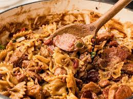

Pastalaya

Description
This is an amazing recipe from youtuber Cajun Ninja. It's a great twist on the classic Cajun dish Jambalaya using Bowtie pasta instead of rice. This recipe will feed an army and be a smash at any family gathering!
Ingredients
- 1 lb pork
- 1 lb boneless chicken thighs
- 1 lb smokes sausage
- 1 onion
- 1 bell pepper
- 1 bunch of green onion
- 2 sticks of celery
- 1 tbsp minced garlic
- 3 beef bouillon cubes
- 1/4 cup vegetable oil
- 3 1/2 cups watter
- 1 can cream of chicken soup
- 1 lb bow tie (or favorite) pasta
- Salt and Pepper
- 1/2 tbsp of cajun seasoning
- 1 tbsp hot sauce
- 2 tbsp Kitchen Bouquet (or other browning sauce)
Steps
- Preheat oven to 300 °F
- Heat a pot over medium heat
- Chop pork, chicken, and sausage
- Chop onion, bell pepper, green onion, and celery, then move to fridge
- Season pork well with salt and pepper
- Add vegetable oil to pot, then start searing the pork
- When you no longer see pink, turn the heat to low and simmer for 25 minutes, stirring occasionally
- After 25 minutes, raise heat back up to medium, add the chicken, let cook for 10 minutes, stirring occasionally
- After 10 minutes, remove pork and chicken with a slotted spoon into a bowl
- Add the sausage to the pot, cooking 10 minutes or until you see some browning
- After 10 minutes, remove the sausage with a slotted spoon into the same bowl
- Add the onion, bell pepper, green onion, celery, garlic, cajun seasoning, and beef cubes
- Sauté until completely soft, roughly 30 minutes
- Add the water, cream of chicken, hot sauce, and kitchen bouquet. Raise the heat
- When the soup has blended, add the pasta and meat back in. Mix well
- Once everything is mixed nicely, press down on the top so that all pasta is covered by liquid
- Bring the mix to a boil. Once boiling, cover, turn the fire off, and put the pot in the oven
- Cook in oven for 1 hour
- After 1 hour, remove the pot, then set aside for 5 minutes before uncovering
- After 5 minutes, mix well and serve